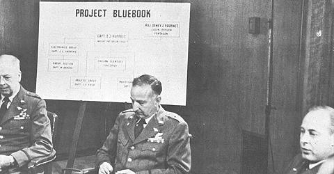

C'est à la suite d'une vague d'observations d'ovnis sans précédent et de la manière contestée dont celles-ci sont
traitées par les responsables du projet Grudge (dénégation systématique, invention
d'explications banales ou psychologiques), que l'étude de l'USAF sur les ovnis est renommée projet Blue Book Littéralement "Livre Bleu", également appelé projet "UFO" à ses débuts, toujours
basée à Wright-Patterson.
Ruppelt
Le projet est confié à un jeune capitaine, Edward J. Ruppelt dès .
Le projet dispose de plus de moyens que son prédécesseur, est plus ouvert au public, et son but officiel est annoncé
le :
Trouver une explication pour l'ensemble des témoignages d'observations d'ovnis
Déterminer si les ovnis représentent une menace pour la sécurité des Etats-Unis
Déterminer si les ovnis présentent une technologie avancée que les Etats-Unis pourraient exploiter.

3 responsables de l'USAF présentant le projet Blue Book
Durant sa fonction officielle, Ruppelt va se révéler prudent et mesuré, mais n'en pense pas moins, comme on s'en
apercevra plus tard.
Conférence du 29 juillet au Pentagone,
à la suite des
nombreuses observations dans la région de Washington. On peut y voir de gauche à droite : L. Roy James,
Roger M. Ramey, Ruppelt, Samford, Donald Bower et Burgoyne L. Griffing
Les membres du projet, dont le major Dewey J. Fournet ou Albert M. Chop,
vont être servis, avec la vague d'observation qui ne fait que croître, avec un pic . À
cette époque les soucoupes volantes sont particulièrement
présentes dans l'actualité depuis plusieurs semaines et l'équipe de 9 personnes de Blue Book est submergé de
signalements d'observations, bien au-delà de ce qu'ils peuvent traiter de manière convenable. A la mi-juillet ils
recoivent près de 20 signalements par jour et des appels effrenés d'officiers de renseignement de chaque base de
l'Air Force des U.S. Les signalements qu'ils reçoivent sont plutôt solides et ne peuvent être expliqués
facilement. En fait, les observations inexpliquées sont autour de 40 %. Tout cela va déboucher vers la fin du mois
à un summum où des ovnis sont repérés par le radar de
l'aéroport national de Washington dans un espace aérien restreint au-dessus du capitol.
La commission Robertson
Vers la fin de l'année , le NSC demande officiellement
à la CIA d'enquêter sur les ovnis et sur la menace éventuelle qu'ils représentent. L'OSI, bureau dépendant de la CIA, crée alors l'IAC, qu'il charge de cette mission. Les avis de ce comité sont rendus dans le
rapport de la Commission Robertson, dont les réunions secrètes sont
organisées à partir du .
, Ruppelt quitte l'armée, et est temporairement remplacé par l'officier de 1ʳᵉ classe Max
Futch. Le est terminé le Rapport n° 12 du projet.
Ruppelt lui, dégagé de ses obligations, va faire diverses révélations concernant le projet dans The Report on
Unidentified Flying Objects, qui va rapidement devenir un classique de l'ufologie.
Hardin
A la suite de Ruppelt et des conclusions de l'encore secrète commission
Roberston, les budgets se réduisent pour le projet qui sera souvent en sous-effectifs, et les directeurs font
faire preuve d'un moindre souci d'objectivité. c'est le capitaine Charles Hardin
qui reprend le flambeau.
, l'ATIC publie le Rapport
Spécial n° 14 du projet Blue Book. Il s'agit d'une étude informatisée de près de 4000 rapports d'observation
d'ovnis reçus par l'ATIC. Cette étude, constituée en grande partie de tableaux statistiques, conclut qu'il n'existe pas de preuve que
des appareils extraterrestres aient visité la terre et qu'avec plus d'information l'ensemble des observations
pourraient être expliquées.
Ce Rapport Spécial n° 14, cependant, inclut également des résumés des
meilleurs cas non expliqués ayant été reçus, ainsi que les résultats d'une autre étude sur les ovnis conduite par
le Battle Memorial Institute, le projet Stork. Afin d'atténuer les critiques de "dissimulation" à
l'encontre de l'USAF de ses découvertes sur les ovnis, le Secrétaire de l'USAF décide de placer le rapport n° 14 dans le domaine public et autorise le Département du
Commerce à en vendre des copies au public, à partir du .
Gregory
A partir de , c'est le capitaine George T. Gregory qui devient
directeur de Blue Book.
Friend
Le major Robert J. Friend, 3ᵉ à partir de la gauche, et les membres du
panel sur les ovnis de la FTDRobert Friend
A partir de , c'est le major Friend qui prend la direction de Blue
Book.
arrive dans l'équipe le major Hector V. Quintanilla.
arrive William T. Coleman en tant chargé des relations publiques
du projet. Il profite de l'occasion pour demander à Friend, le rapport qu'il a envoyé en 1955, sans succès. Je
pensai que c'était plutôt un bon cas, parce qu'il y avait 5 rapports de témoins visuels crédibles recoupant le
même événement déclare-t-il. Il attribue cela au traitement bureaucratique du projet.
Quintanilla
L'équipe du projet , dirigée par Quintanilla (assis)
, c'est Quintanilla qui prend la direction du projet. , William T. Coleman quitte le projet.
, les explications de l'USAF sur une
série d'observations à Dexter et Hillsdale (Michigan) vont provoquer un
véritable
scandale dans l'opinion, qui ne fait plus confiance à l'armée de son pays, qui cherche visiblement à étouffer les
affaires. Le projet est ébranlé.
Statistiques du projet Blue Book, 1947/1969
Un audit du projet est commandé par l'USAF, débouchant sur la forme du rapport O'Brien. Une commission
est nommée, qui décide de mettre en place le projet
Colorado, qui débouchera sur le Rapport Condon, concluant les 15 ans d'étude des ovnis par l'USAF. Une
conclusion négative qui recommandera de stopper l'étude (du moins officiellement Friedman, S. T. & B. Ann Slate: "Une étude
"secrète" de la Force Aérienne dit que les ovnis sont réels", Rapport ovni Saga, vol. 1, n° 5, p. 28 — Sur le rapport spécial n° 14 du Projet Blue Book, étude statistique préparée par le BMI), et qui sera critiquée Condon Study Rebuts UFOs; Critics Offer Own Version, Physics
Today, vol. 22, n° 3, mars 1969, p. 67, p. 71. Des voix s'élèveront plus tard pour qu'une étude
officielle soit rétablie "Should the
USAF Reopen Project Blue Book?", 1974.
Mavrakis/Olivier 1986 Steiger, B.: Project Blue
Book, 1987Randle, K.: Project Blue
Book Exposed, 1998Hall, Michael: Projet Blue Book
1951-1969, NICAPBlue Book
archive, effort conjoint du Projet 1947, SHG, FUFOR et Archives for UFO Research